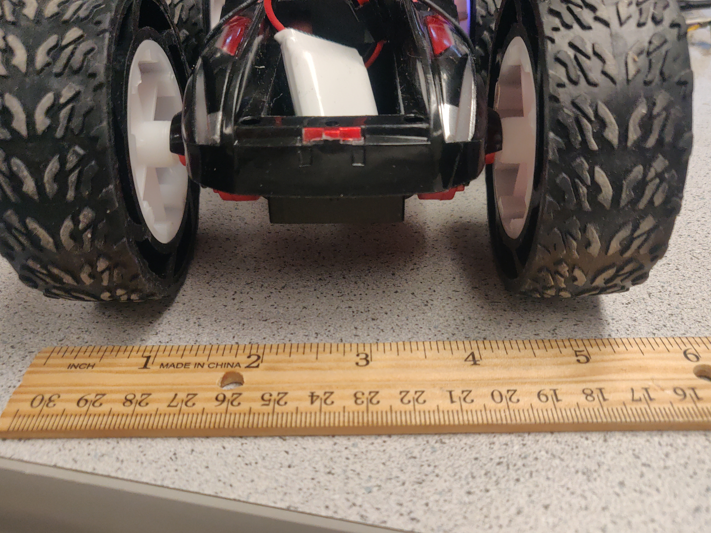
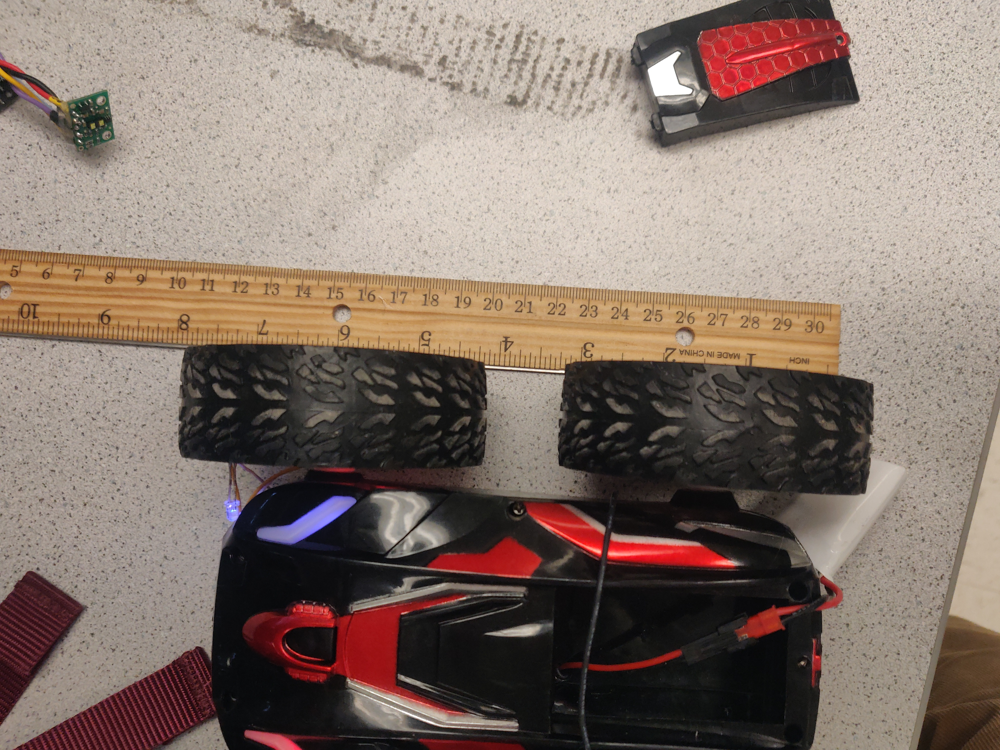

The purpose of Lab 4 is to get a sense of the robot that we will be utilizing for the rest of the lab. This includes things such as braking, dynamic stunt chracteristics, length/width.
1. Car Characteristics
2. Car Dynamics - Stunts
The car was measured, in case this information might be required for future calculations involving robot size.
LENGTH: ~8 Inches
WIDTH: ~6 Inches
The first test executed was to see how the car execute flips, and how reliably it does so. The primary observation here was that the flipping behavior heavily depends on the battery charge - a newly charged battery sees no issues in executing flips as the motors have enough velocity and torque, but when using an older battery the car is no longer able to flip and instead only drives front and back.
Fast Robot Flip
The next behavior tested was how reliably it can jump off of surfaces. This test was preformed several times, and the major obervation was that upon landing, the car does not follow its original path and instead upon stabliizing takes a whole new direction. This may be important to know for future parts - we might want to keep the robot on a flat surface at all times
Fast Robot Jump
Next, the drift while the vehicle spins on it's axis was determined. To do so, the vehicle was spun on its axis from a chosen location during 10s, and the drift distance was measured.
Fast Robot Spin
Upon observing the drift distance, it was concluded that over the course of 10s of spinning on a low-friction surface (in this case the lab space), the robot drifts apprximately 8 inches.
Next, the ability to flip against a wall was tested for reliability. In this case, the robot preformed very well - when flipping against a wall, it maintained a perfect perpendicular angle to the wall and was able to drive away perpendicularly. This could come to use if the robot requires to readjust it's orientation to perform certain behaviors, as it essentially aligns the robot to a specific global orientation in the room.
Fast Robot Wall Flip
- - - - - This concludes Lab 4- - - - -